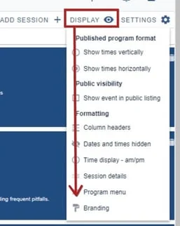
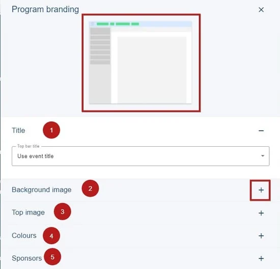
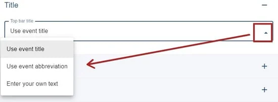
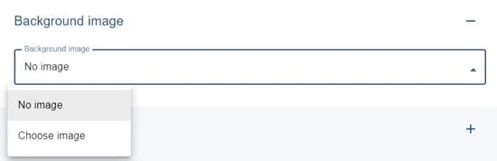
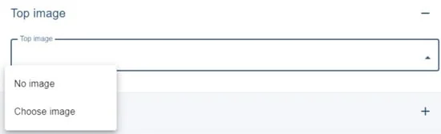
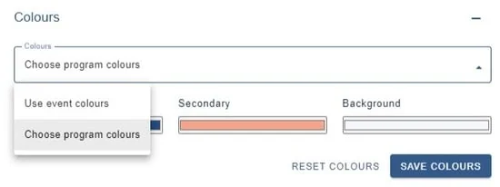
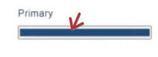

Professional Conference - branding
This feature is only available in the Professional Conference package.#
The guidance below is for event administrators/ organisers. If you are an end user (eg. submitter, reviewer, delegate etc), please click here.
Go to
Event dashboard ➞ Conference ➞ Program ➞ Builder
then
Display ➞ Formatting ➞ Branding

The Program branding panel will open. At the top you will see a preview of the part of the program you will be formatting. To the right of each section, you'll see a + icon. Click to display the options.
(Note - 6) Sponsorship guidance is here.)

1) Title
Click the dropdown to see the following. The first two options will be pulled from your event details.
If you would prefer, you can enter your own choice of title.

2) The background image displays behind the program.

3) The top image will display at the top of the program and aligned to the centre. A letterbox image is preferable here.

4) You can choose to use the event colours that are set in Event theme, or choose custom colours for the program. If you pick Choose program colours, the options below will be displayed. There are three options - Primary, Secondary and Background. Take a look at the visual (top of screen) to see where these will be displayed.

To set your colours, click in each colour bar.

1) Move the cursor round to pick your colour
2) Use the pipette to hover over a colour to pick
 3) Current colour
3) Current colour
4) Move the cursor to the left to change the colour range in 1)
5) Enter RGB codes.
Ensure you click Save to retain your choices.
Did this page solve it?
Thanks — this helps us fix it.
Didn't solve it? Ask our support team
No question is too small, and there's no charge for asking. Raise a ticket and someone who knows the software will pick it up.